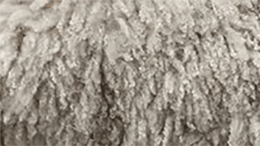
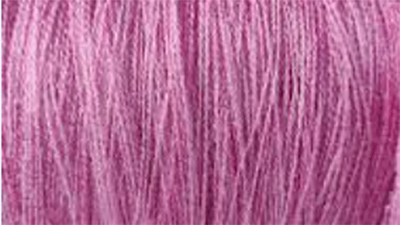

Choosing your Yarn by Fiber:
Wool

| Pros: | Cons: |
|---|---|
| Warm | Itchy |
| Breathable | Prone to pilling |
| Easy Care |
Acrylic

| Pros: | Cons: |
|---|---|
| Inexpensive | Less breathable |
| Easy to find | Can melt at high heat |
| Machine washable and dryable | Holds stains and odors more |
Cotton

| Pros: | Cons: |
|---|---|
| Lightweight | Prone to pilling |
| Breathable | Tendency to split when crocheting |
| Low Cost | |
| Lots of colors |